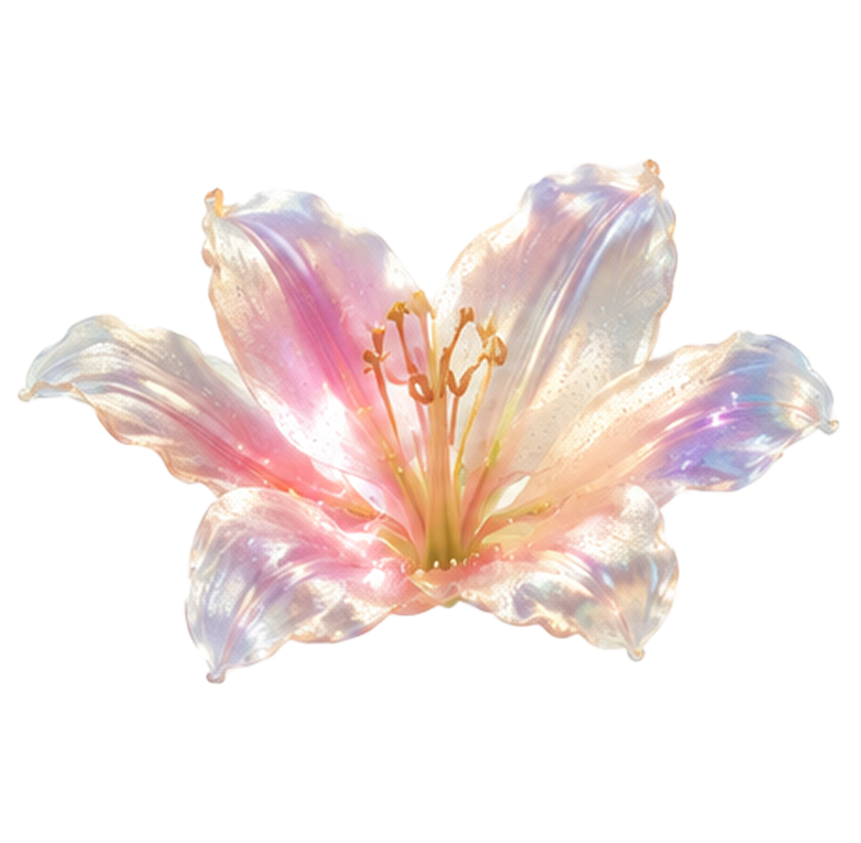

03 / YOUR TRACE
Your expression has become
a trace of this moment.
YOUR FLOWER

THIS IS YOUR TRACE.
01 / ABOUT
Thousands of photos.
But what do they actually say about you?
우리는 매일 수많은 순간을 사진으로 남기지만,
그 기록이 나에 대해 무엇을 말하고 있는지는 쉽게 지나칩니다.
TRACE ME는 사진 속 순간과 감정의 흐름을 연결하여 반복되는 패턴과 시간에 따른 변화를 발견하고, 기록을 통해 자신을 이해할 수 있도록 돕는 갤러리 앱입니다.
Your moments become traces.
Your traces become patterns.